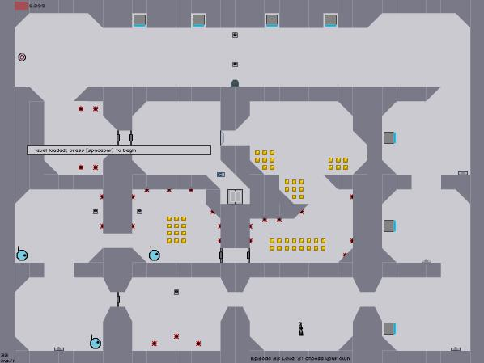

It took a while to get here, but I don't want to start, because well, look at this picture.
Impossible, right? As you can see, there are only 6 seconds on the timer, surely not enough time to collect the gold coins. Please help.

Impossible, right? As you can see, there are only 6 seconds on the timer, surely not enough time to collect the gold coins. Please help.